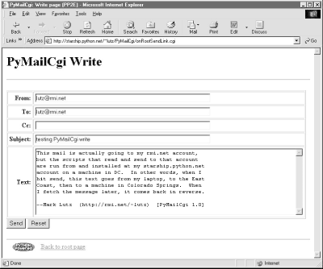
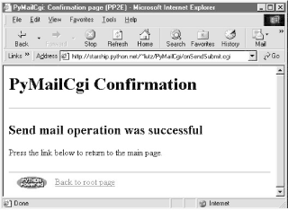
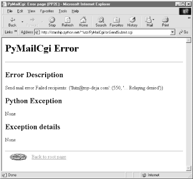
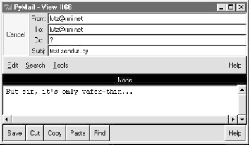

| I l@ve RuBoard |
|
13.4 Sending Mail by SMTPPyMailCgi supports two main functions (as links on the root page): composing and sending new mail to others, and viewing your incoming mail. The View function leads to pages that let users reply to, forward, and delete existing email. Since the Send function is the simplest, let's start with its pages and scripts first. 13.4.1 The Message Composition PageThe Send function steps users through two pages: one to edit a message and one to confirm delivery. When you click on the Send link on the main page, the script in Example 13-3 runs on the server. Example 13-3. PP2E\Internet\Cgi-Web\PyMailCgi\onRootSendLink.cgi#!/usr/bin/python
# On 'send' click in main root window
import commonhtml
from externs import mailconfig
commonhtml.editpage(kind='Write', headers={'From': mailconfig.myaddress})
No, this file wasn't truncated; there's not much to see in this script, because all the action has been encapsulated in the commonhtml and externs modules. All that we can tell here is that the script calls something named editpage to generate a reply, passing in something called myaddress for its "From" header. That's by design -- by hiding details in utility modules, we make top-level scripts like this much easier to read and write. There are no inputs to this script either; when run, it produces a page for composing a new message, as shown in Figure 13-3. Figure 13-3. PyMailCgi send (write) page13.4.2 Send Mail ScriptMuch like the Tkinter-based PyMailGui client program we met in Chapter 11, this page provides fields for entering common header values as well as the text of the message itself. The "From" field is prefilled with a string imported from a module called mailconfig. As we'll discuss in a moment, that module lives in another directory on the server in this system, but its contents are the same as in the PyMailGui example. When we click the Send button of the edit page, Example 13-4 runs on the server. Example 13-4. PP2E\Internet\Cgi-Web\PyMailCgi\onSendSubmit.cgi#!/usr/bin/python
# On submit in edit window--finish a write, reply, or forward
import cgi, smtplib, time, string, commonhtml
#commonhtml.dumpstatepage(0)
form = cgi.FieldStorage( ) # parse form input data
# server name from module or get-style url
smtpservername = commonhtml.getstandardsmtpfields(form)
# parms assumed to be in form or url here
from commonhtml import getfield # fetch value attributes
From = getfield(form, 'From') # empty fields may not be sent
To = getfield(form, 'To')
Cc = getfield(form, 'Cc')
Subj = getfield(form, 'Subject')
text = getfield(form, 'text')
# caveat: logic borrowed from PyMailGui
date = time.ctime(time.time( ))
Cchdr = (Cc and 'Cc: %s\n' % Cc) or ''
hdrs = ('From: %s\nTo: %s\n%sDate: %s\nSubject: %s\n'
% (From, To, Cchdr, date, Subj))
hdrs = hdrs + 'X-Mailer: PyMailCgi Version 1.0 (Python)\n'
Ccs = (Cc and string.split(Cc, ';')) or [] # some servers reject ['']
Tos = string.split(To, ';') + Ccs # cc: hdr line, and To list
Tos = map(string.strip, Tos) # some addrs can have ','s
try: # smtplib may raise except
server = smtplib.SMTP(smtpservername) # or return failed Tos dict
failed = server.sendmail(From, Tos, hdrs + text)
server.quit( )
except:
commonhtml.errorpage('Send mail error')
else:
if failed:
errInfo = 'Send mail error\nFailed recipients:\n' + str(failed)
commonhtml.errorpage(errInfo)
else:
commonhtml.confirmationpage('Send mail')
This script gets mail header and text input information from the edit page's form (or from parameters in an explicit URL), and sends the message off using Python's standard smtplib module. We studied smtplib in depth in Chapter 11, so I won't say much more about it now. In fact, the send mail code here looks much like that in PyMailGui (despite what I've told you about code reuse; this code would be better made a utility). A utility in commonhtml ultimately fetches the name of the SMTP server to receive the message from either the mailconfig module or the script's inputs (in a form field or URL parameter). If all goes well, we're presented with a generated confirmation page, as in Figure 13-4. Figure 13-4. PyMailCgi send confirmation pageNotice that there are no usernames or passwords to be found here; as we saw in Chapter 11, SMTP requires only a server that listens on the SMTP port, not a user account or password. As we also saw in that chapter, SMTP send operations that fail either raise a Python exception (e.g., if the server host can't be reached) or return a dictionary of failed recipients. If there is a problem during mail delivery, we get an error page like the one shown in Figure 13-5. This page reflects a failed recipient -- the else clause of the try statement we used to wrap the send operation. On an actual exception, the Python error message and extra details would be displayed. Figure 13-5. PyMailCgi send error pageBefore we move on, you should know that this send mail script is also used to deliver reply and forward messages for incoming POP mail. The user interface for those operations is slightly different than for composing new email from scratch, but as in PyMailGui, the submission handler logic is the same code -- they are really just mail send operations. It's also worth pointing out that the commonhtml module encapsulates the generation of both the confirmation and error pages, so that all such pages look the same in PyMailCgi no matter where and when they are produced. Logic that generates the mail edit page in commonhtml is reused by the reply and forward actions too (but with different mail headers). In fact, commonhtml makes all pages look similar -- it also provides common page header (top) and footer (bottom) generation functions, which are used everywhere in the system. You may have already noticed that all the pages so far follow the same pattern: they start with a title and horizontal rule, have something unique in the middle, and end with another rule, followed by a Python icon and link at the bottom. This common look-and-feel is the product of commonhtml; it generates everything but the middle section for every page in the system (except the root page, a static HTML file). If you are interested in seeing how this encapsulated logic works right now, flip ahead to Example 13-14. We'll explore its code after we study the rest of the mail site's pages. 13.4.2.1 Using the send mail script outside a browserI initially wrote the send script to be used only within PyMailCgi, using values typed into the mail edit form. But as we've seen, inputs can be sent in either form fields or URL parameters; because the send mail script checks for inputs in CGI inputs before importing from the mailconfig module, it's also possible to call this script outside the edit page to send email. For instance, explicitly typing a URL of this nature into your browser (but all on one line and with no intervening spaces): http://starship.python.net/~lutz/
PyMailCgi/onSendSubmit.cgi?site=smtp.rmi.net&
From=lutz@rmi.net&
To=lutz@rmi.net&
Subject=test+url&
text=Hello+Mark;this+is+Mark
will indeed send an email message as specified by the input parameters at the end. That URL string is a lot to type into a browser's address field, of course, but might be useful if generated automatically by another script. As we saw in Chapter 11, module urllib can then be used to submit such a URL string to the server from within a Python program. Example 13-5 shows one way to do it. Example 13-5. PP2E\Internet\Cgi-Web\PyMailCgi\sendurl.py####################################################################
# Send email by building a URL like this from inputs:
# http://starship.python.net/~lutz/
# PyMailCgi/onSendSubmit.cgi?site=smtp.rmi.net&
# From=lutz@rmi.net&
# To=lutz@rmi.net&
# Subject=test+url&
# text=Hello+Mark;this+is+Mark
####################################################################
from urllib import quote_plus, urlopen
url = 'http://starship.python.net/~lutz/PyMailCgi/onSendSubmit.cgi'
url = url + '?site=%s' % quote_plus(raw_input('Site>'))
url = url + '&From=%s' % quote_plus(raw_input('From>'))
url = url + '&To=%s' % quote_plus(raw_input('To >'))
url = url + '&Subject=%s' % quote_plus(raw_input('Subj>'))
url = url + '&text=%s' % quote_plus(raw_input('text>')) # or input loop
print 'Reply html:'
print urlopen(url).read( ) # confirmation or error page html
Running this script from the system command line is yet another way to send an email message -- this time, by contacting our CGI script on a remote server machine to do all the work. Script sendurl.py runs on any machine with Python and sockets, lets us input mail parameters interactively, and invokes another Python script that lives on a remote machine. It prints HTML returned by our CGI script: C:\...\PP2E\Internet\Cgi-Web\PyMailCgi>python sendurl.py Site>smtp.rmi.net From>lutz@rmi.net To >lutz@rmi.net Subj>test sendurl.py text>But sir, it's only wafer-thin... Reply html: <html><head><title>PyMailCgi: Confirmation page (PP2E)</title></head> <body bgcolor="#FFFFFF"><h1>PyMailCgi Confirmation</h1><hr> <h2>Send mail operation was successful</h2> <p>Press the link below to return to the main page.</p> </p><hr><a href="http://www.python.org"> <img src="../PyErrata/PythonPoweredSmall.gif" align=left alt="[Python Logo]" border=0 hspace=15></a> <a href="pymailcgi.html">Back to root page</a> </body></html> The HTML reply printed by this script would normally be rendered into a new web page if caught by a browser. Such cryptic output might be less than ideal, but you could easily search the reply string for its components to determine the result (e.g., using string.find to look for "successful"), parse out its components with Python's standard htmllib module, and so on. The resulting mail message -- viewed, for variety, with Chapter 11's PyMailGui program -- shows up in my account as seen in Figure 13-6. Figure 13-6. sendurl.py resultOf course, there are other, less remote ways to send email from a client machine. For instance, the Python smtplib module itself depends only upon the client and POP server connections being operational, whereas this script also depends on the CGI server machine (requests go from client to CGI server to POP server and back). Because our CGI script supports general URLs, though, it can do more than a "mailto:" HTML tag, and can be invoked with urllib outside the context of a running web browser. For instance, scripts like sendurl.py can be used to invoke and test server-side programs. |
| I l@ve RuBoard |
|